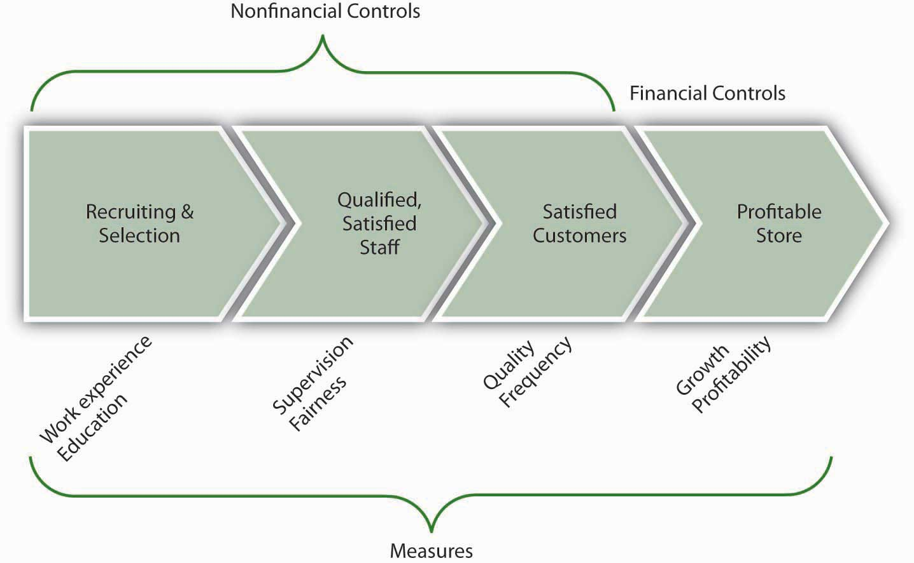

If you have ever completed a customer satisfaction survey related to a new product or service purchase, then you are already familiar with nonfinancial controls. Nonfinancial controls are defined as controls where nonfinancial performance outcomes are measured. Why is it important to measure such outcomes? Because they are likely to affect profitability in the long term.
How do we go about identifying nonfinancial controls? In some areas it is easy to do, and in others more difficult. For instance, if Success-R-Us were having trouble retaining employees (meaning that turnover is high), it might be incurring higher recruiting and training costs and lower customer satisfaction, as a result. Some possible nonfinancial controls are described next.
Human Resources
Marketing
Production
Purchasing
Research and Development
Customer Service
In a review of current nonfinancial control practices, Harvard professors Chris Ittner and David Larcker commented, “Tracking things like customer satisfaction and employee turnover can powerfully supplement traditional bookkeeping. Unfortunately, most companies botch the job.”Ittner, C., & Larcker, D. F. (2003, November). Coming up short on nonfinancial performance measurement. Harvard Business Review, 2–8.
Ittner and Larcker somewhat cynically conclude their study by stating, “The original purpose of nonfinancial performance measures was to fill out the picture provided by traditional accounting. Instead, such measures have become a shabby substitute for financial performance.”Ittner, C., & Larcker, D. F. (2003, November). Coming up short on nonfinancial performance measurement. Harvard Business Review, 2–8. However, research also shows that those firms that put these nonfinancial controls in place, and can validate them, earn much higher profits than those that don’t.Ittner, C., & Larcker, D. F. (2003, November). Coming up short on nonfinancial performance measurement. Harvard Business Review, 2–8. With the aim of working toward an understanding of how to put such controls into place, let’s first look at common mistakes that organizations make.
While poorly conceived and implemented nonfinancial controls are certainly a cost for organizations, such ineptness is no defense for not including them in every modern organization’s system of controls. If management were a poker game, then the ability to use nonfinancial controls would be a table stake in the game—that is, you only get to play if you have skills with them. The world is simply changing too fast, and competitors’ capabilities are evolving too quickly, such that managers who relied only on financial controls would soon find their organizations in trouble. You can help us come up with plenty of examples here, but let’s simply look at the relationship between customer satisfaction and a retail store’s sales. A dissatisfied customer is hard to get back (and may have been dissatisfied enough to leave the store before even making that first purchase)!
While interest in nonfinancial controls is exploding, it seems somewhat disappointing that they aren’t living up to the job. Why do so many companies appear to misunderstand how to set and use nonfinancial controls effectively? Let’s take a look at four additional top mistakes Ittner and Larcker identified in their research.
This mistake appears to be a common one but its root cause—failure to adapt the control system to the specific strategy of the organization—is not obvious. Growth in interest in nonfinancial controls has led to widespread adoption of such systems as the Balanced Scorecard, Performance Prism, or the Intellectual Capital Navigator. However, because these systems are complex, managers tend to put them in place without tailoring them to the specific needs and characteristics of their organization.
Several things can go wrong when nonfinancial controls are not linked to the strategy. First, control systems tend to be tied to reward systems, and if managers and employees are being paid based on the achievement of certain nonstrategic, nonfinancial outcomes, then the firm’s strategy and, hence, performance, could suffer. Second, if the controls are not linked to the strategy, or the linkages are unclear, then managers do not really understand which nonfinancial controls are the most important. This leads us to the second common mistake.
There are two big challenges that organizations face when trying to use nonfinancial controls. First, nonfinancial controls are indirectly related to financial performance; the relationship is like a sequence of nonfinancial outcomes that cascade down to financial performance. For instance, (1) good employee recruiting leads to (2) satisfied employees, which leads to (3) an employee base that creates value, which leads to (4) satisfied customers, which leads to (5) profitable customer buying patterns, which lead to (6) good profitability. Yikes! You can see how these six nonfinancial outcomes might lead to good financial performance, but you can also imagine that it might be challenging to identify and manage the inputs to each step.
The second challenge is, once you’ve taken the step of identifying these linkages, to show that the linkages actually exist. However, while more companies are putting such models into place, few are collecting the information to test and validate the actual relationships in their organization. In fact, Ittner and Larcker found that less than a quarter of the firms that they surveyed actually did any formal validation of the nonfinancial model they had developed.
You can imagine the possible problems that might be created with such an unvalidated system. For one, the organization might be investing in all these steps, without any evidence of their effectiveness. Worse, some of the steps might actually lead to lower performance—unfortunately, without validation, managers just don’t know. For example, an organization might believe that better technology in a product leads to more sales. If this technology also leads to a higher-cost product, and customers are very price-sensitive, then the new technology nonfinancial control could lead to worse financial performance.
The third common area of weakness in the use of nonfinancial controls is somewhat related to the second. Our example with technology shows this relationship well. For instance, managers might not have validated the link between better technology and downstream customer purchasing preferences; or, technology might have been important, but only up to the point that it did not affect product price. So, while technology was a valid part of our nonfinancial controls, we also need to consider the appropriate level of technology—that is, set the right nonfinancial objective for level of technology, customer service, or whatever nonfinancial control is of interest.
You can imagine that a firm might want to set high goals, and therefore control, for such things as customer satisfaction or employee turnover. But you can probably also imagine what the costs might be of getting 100% customer satisfaction or zero employee turnover. At some point, you have to make some cost-benefit decisions unless your resources (time, money, etc.) are unlimited.
Failing to set appropriate performance targets can take on another form. In such cases, instead of setting inappropriate nonfinancial controls and related targets, the organization simply has set too many.Brown, M. G. (1996). Keeping score. New York: Productivity Press. This can happen when a new control system is put in place, but the old one is not removed. Just as often, it can occur because management has not made the hard choices about which nonfinancial controls are most important and invested in validating their usage.
We have seen so far that the first three common failings are (1) failure to tie nonfinancial controls to the strategy, (2) failure to validate the relationships between nonfinancial and financial controls, and (3) failure to set the appropriate nonfinancial control targets. The fourth failing is somewhat technical, but it also relates to validity and validation—that is, in many cases, an inappropriate measure is used to assess whether a targeted nonfinancial control is being achieved.
This can happen for a number of reasons. First, different parts of the business may assess customer satisfaction differently. This makes it very hard to evaluate consistently the relationship between customer satisfaction (a nonfinancial control) and financial performance. Second, even when a common basis for evaluation is used, the meaning may not be clear in the context of how it is measured. For example, if you created a simple survey of customer satisfaction, where you were scored on a range from 1 (satisfied) to 7 (unsatisfied), what does each individual score between 1 and 7 mean? Finally, sometimes the nonfinancial control or objective is complex. Customer or employee satisfaction, for instance, are not necessarily easily captured on a scale of 1 to 7. Now imagine trying to introduce controls for leadership ability (i.e., we know if we have strong leaders, they make good choices, which eventually lead to good financial performance) or innovativeness (i.e., cool products lead to more customer enthusiasm, which eventually leads to financial performance). Such intangibles are extremely difficult to measure and to track.
Now that you have an understanding of the common challenges and mistakes that organizations face when working with nonfinancial controls, including the omission of them entirely, you have the foundation for understanding how to use them effectively. For organizations that manage well with nonfinancial controls, the benefits definitely outweigh the costs. Since we outlined five possible areas for mistakes, let’s work briefly through five possible solution areas.
As we mentioned earlier in this section, the delayed and historic nature of financial controls makes it risky to rely on them alone. Step back and reflect on the organization’s strategy, then pick one or several nonfinancial controls such as customer or employee satisfaction as a starting point. It is critical that you start with a conceptual model using simple boxes and arrows in terms of what nonfinancial control leads to another, and so on.
The following figure shows a working model of these relationships for a retail store that sells unique products. This leads us to our second solution.
Figure 15.8 Sample Mix of Nonfinancial and Financial Controls
Be sure to confirm that whichever nonfinancial controls are in place, they reflect and reinforce the unique strategy of the organization. This also should remind you that, if the strategy ever changes, you should go back and revalidate the links between the nonfinancial controls and the strategy. For instance, in our retail store example, part of the strategy is to sell unique products, which means that employees with particular work experience and education may provide better customer service than inexperienced employees. If the store changed its strategy to sell more generic products, however, it might not need such experienced or educated employees anymore.
As you recall, organizations often use more than one nonfinancial control with the assumption that they cascade down to bottom-line financial performance. Of course, when there are fewer nonfinancial controls, it is easier to detect relationships among them. Regardless, with information collected about the controls, management must seek to use simple statistical techniques to verify the causal relationship between one control and another, and eventually financial performance. For instance, if nonfinancial controls were functioning as assumed, you might find that when employees are more satisfied, customers are more satisfied, and when both are more satisfied, more higher-profit-margin products are sold. If such relationships can’t be proved, then managers must revisit their choice of nonfinancial controls.
Extending the prior example, you would want to be sure that you set employee and customer satisfaction control targets appropriately. Assuming that you validated the linkages, while it might be nice to reach 100% satisfaction levels across employees and customers, it might not be cost-effective. This does not mean that you abandon the use of such controls; instead you must determine whether 90% satisfaction (or some other number) still leads to greater product sales.
Finally, make sure that what you ultimately measure fits well with the control objectives. For instance, with our retail store example, would you measure work experience by the number of years that an applicant has worked? Or would you want experience with a particular type of product or service? Similarly, with regard to education, you would want to make a choice as to measuring grade-point average, standardized test score, or major. As a reminder, this type of validation is relevant to nonfinancial and financial measures alike. For instance, if our hypothetical store’s sales are growing, but profitability is going down, then we would want to figure out why these financial controls aren’t painting the same picture. For example, it might be that we’ve hired more salespeople, who help us sell more, but that we are not selling enough to cover the additional costs of the added people’s salaries. These examples should help you see the point about using the right measure.
Nonfinancial controls, such as those related to employee satisfaction, customer service, and so on, are an important and increasingly applied form of organizational control. While firms that use nonfinancial controls well also perform much better than firms that don’t use them, there is a plethora of managerial mistakes made with regard to their conceptualization, implementation, or both. Beyond simply using nonfinancial controls, best practices around such controls include aligning them with the strategy, validating the links between nonfinancial controls and financial controls, setting appropriate control performance targets, and confirming the right measure of the desired control.